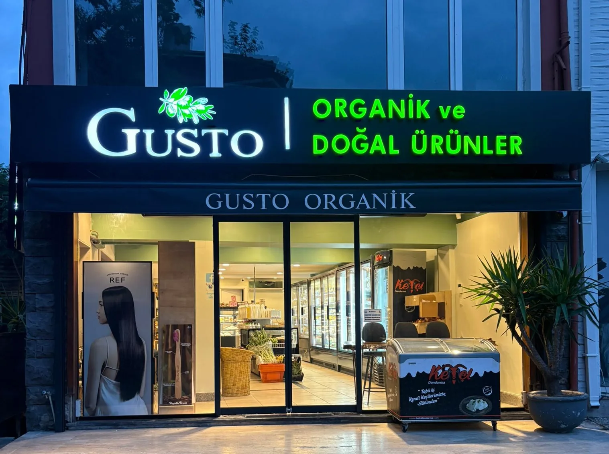
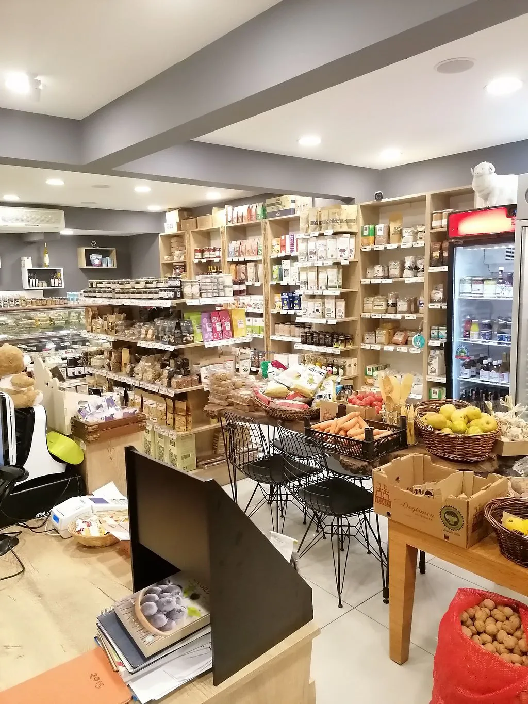
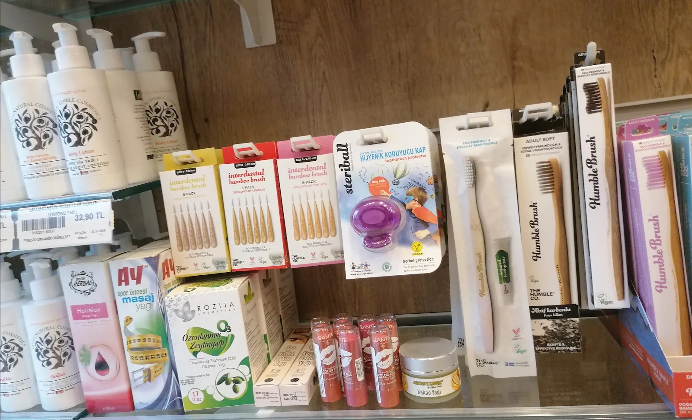

Tarabya’da taze organik ürünler
Şalcıkır Caddesi 9A. Organik meyve-sebze, şarküteri ve günlük taze reyon — mahallenin sakin marketi.

Tarabya, Sarıyer
Dükkânda neler var
Taze manav, şarküteri, vegan ve glutensiz ürünler. Tarabya’da sakin bir mahalle marketi.
Taze manav
Organik meyve ve sebze. Yorumlarda tazelik ve çeşit öne çıkıyor.
Şarküteri
Günlük şarküteri reyonu. Aradığınız ürün için yazın.
Özel beslenme
Vegan ve glutensiz ürünler. Güncel stok için yazın.
Ev servisi
Mahalle teslimatı yorumlarda geçiyor. Kapsam için bize yazın.

Tarabya’nın sakin organik marketi
Gusto Organik, Şalcıkır Caddesi 9A’da durur. Tabelada doğal ürünler yazar; içeride taze manav ve şarküteri vardır.
Komşularımız temiz içeriği, ilgili kadroyu ve ev servisini anlatıyor. Instagram’da @gustoorganik.
Sokağımızın altına açılan cevher.
Şalcıkır Caddesi 9A
Tabela, vitrin ve reyon.
Tabela ve vitrin
Şalcıkır Caddesi 9A.
Reyon
Ahşap raflar, taze reyon.

Doğal bakım
Kişisel bakım ve doğal kozmetik.
Mahalleden notlar
30 değerlendirme, 4,8 puan. Alıntılar Google Haritalar’dan.
“Organik taze meyve sebzeler harika, şarküteride aradığım her şeyi bulabildim, eve servisleri de var. Tavsiye ederim.”
“Sokağımızın altına açılan cevher. Temiz içerik, ilgili, donanımlı kadro ve en güzeli de evimize servis.”
Kısa sorular
Yanıtı burada yoksa bize yazın.
Sipariş veya bilgi için nasıl ulaşabilirim?
Mesajınızı yazın; tek tıkla WhatsApp üzerinden gönderin. Numaramız 0531 648 86 96.
Çalışma saatleriniz nedir?
Pazartesi 08:30–20:30, salı–cuma 09:00–20:30, cumartesi 09:00–19:30, pazar 11:00–18:00.
Ev servisi var mı?
Mahalle teslimatı yorumlarda geçiyor. Güncel kapsam için yazın.
Neler satıyorsunuz?
Organik meyve-sebze, şarküteri, vegan ve glutensiz ürünler. Güncel reyon için yazın.
Neredesiniz?
Tarabya, Şalcıkır Cd. 9A, 34457 Sarıyer / İstanbul.
Tarabya’da sizi bekleriz
Şalcıkır Caddesi 9A. Sipariş ve bilgi için yazın.
İletişim
Şalcıkır Caddesi 9A
| Pazartesi | 08:30 — 20:30 |
| Salı — Cuma | 09:00 — 20:30 |
| Cumartesi | 09:00 — 19:30 |
| Pazar | 11:00 — 18:00 |